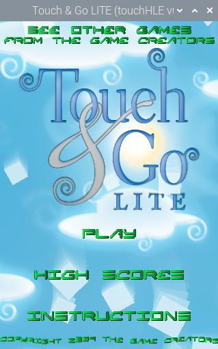
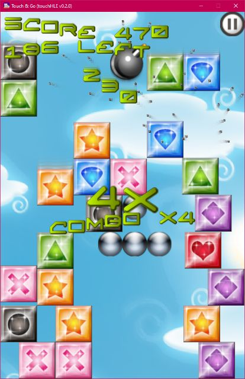
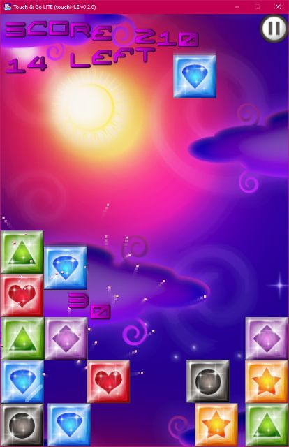

| App name | Touch & Go |
|---|---|
| Release year | 2009 |
| Developer/Publisher | The Game Creators |
| First reported | |
| First reported by | @hikari-no-yume |
| Version number | Display name | Bundle identifier | Minimum iOS version | Best rating | Last updated | First reported by | |
|---|---|---|---|---|---|---|---|
| 1.1 | Touch & Go | com.thegamecreators.TouchAndGo | 2.0 | ⭐️⭐️⭐️⭐️⭐️ | @hikari-no-yume | ||
| 1.2 | Touch & Go LITE | com.thegamecreators.TouchAndGoLite | 2.0 | ⭐️⭐️⭐️⭐️⭐️ | @hikari-no-yume |
| Version number | touchHLE version | Operating system | GPU | Scale hack supported? | Rating | Reported | Reported by | Remarks | Screenshot |
|---|---|---|---|---|---|---|---|---|---|
| 1.2 | v0.2.2 | Raspberry PI OS (Using Wine 9.3 with box64) | Raspberry PI 4B | Didn't test | ⭐️⭐️⭐️⭐️⭐️ | @corped12 | Works perfectly | View | |
| 1.1 | v0.2.1 | Windows 11 22H2 | AMD Radeon Vega Mobile | Didn't test | ⭐️⭐️⭐️⭐️⭐️ | @notprogramminggames | Was able to play first 3 levels without problem. The rest of levels weren't tested | ||
| 1.1 | v0.2.0 | Windows 10 22H2 | NVIDIA GTX 1070 | Yes | ⭐️⭐️⭐️⭐️⭐️ | @hikari-no-yume | View | ||
| 1.2 | v0.2.0 | Windows 10 22H2 | NVIDIA GTX 1070 | Yes | ⭐️⭐️⭐️⭐️⭐️ | @hikari-no-yume | View |
| Rating | Description |
|---|---|
| ⭐️ | Completely broken: app crashes immediately without any user interaction. |
| ⭐️⭐️ | Only (part of) the main menu, intro or similar is working. |
| ⭐️⭐️⭐️ | Some of the main content of the app works, but with major issues. |
| ⭐️⭐️⭐️⭐️ | The main content of the app works (e.g. entire game is playable) with only small issues. |
| ⭐️⭐️⭐️⭐️⭐️ | Everything works. The app is fully usable. |


